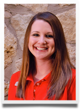

Gerald Kassoy DDS, MS
Dr. Gerald Kassoy is a native of Marblehead, Massachusetts, a Boston suburb. After graduating from the University of Massachusetts and Howard College of Dentistry, he came to Columbus in 1975 where he completed his residency in pediatric dentistry at Nationwide Children’s Hospital and earned a master’s degree from The Ohio State University. He then served as a staff dentist at the Nisonger Center at OSU, a center for patients with special needs.
The dental practice now known as Buckeye Pediatric Dentistry began almost 50 years ago. Dr. Kassoy took over the practice in 1979. After all these years he still enjoys working with children and especially enjoys seeing the children of former patients!! Dr. Kassoy also works as a clinical assistant professor at The Ohio State University College of Dentistry.
Dr. Kassoy is an active member of the American Academy of Pediatric Dentistry and is a past president of the Ohio Academy of Pediatric Dentistry. His special interests include dentistry for the special needs patient, pediatric oral pathology, behavior management and dental education.
Patients benefit greatly from Dr. Kassoy's many years of experience in pediatric dentistry. His warm and friendly personality helps put even the most anxious of patients at ease. The kids LOVE to talk sports with Dr. Kassoy. He is an avid Ohio State and Boston Red Sox fan, as well as a supporter of our patients many sports teams. His amazing memory helps him remember everything patients tell him but also gives him extensive sports trivia knowledge! Dr. Kassoy is also an active supporter of the Special Olympics and the Bexley Schools music and theatre programs (even though he has no talent of his own). He also enjoys biking and tennis.
Dr. Kassoy is happily married to his wife Felice, a school counselor and graduate student. They are the proud parents of a teenage daughter, an adult son, an adult daughter and a son-in-law. The entire family is happily awaiting the arrival of their first grandchild!
 Lucia Gerstmann DDS, MS,
Lucia Gerstmann DDS, MS,
Diplomate of the American Board of Pediatric Dentistry
Dr. Lucia was born in New York and grew up moving all over the country but her family finally settled in Cleveland in 1988. Dr. Lucia moved to Columbus to go to The Ohio State University. She graduated with honors in 1997 with a Bachelor of Science in Biology. She continued her education at The Ohio State University College of Dentistry, where she received numerous awards for her research. She obtained her Doctor of Dental Surgery in 2001. Dr. Lucia completed her masters degree and pediatric dental residency from 2001-2003 at Nationwide Children’s Hospital, where she helped begin the Infant Oral Health Clinic, which is still going strong and is the foundation of several important research projects today.
After residency, Dr. Lucia worked in private practice and part-time as an attending faculty member at Nationwide Children’s Hospital until joining Dr. Kassoy as an associate in 2005. In 2011, Drs. Lucia and Kassoy formed a partnership and renamed the practice Buckeye Pediatric Dentistry. Dr. Lucia continues to teach in the pediatric dental residency program at Nationwide Children’s Hospital.
Dr. Lucia is an active member of the American Academy of Pediatric Dentistry and a Diplomate of the American Board of Pediatric Dentistry, which means she has undergone additional testing and credentialing to become a board certified pediatric dentist. Her special interests include microbiology, infant oral health, behavior management, and preventative dentistry. The kids have fun with Dr. Lucia and respond well to her motherly approach to dentistry. She talks a lot and has lots of fun stories, but is a terrible singer. She is an expert on everything princess and knows quite a lot about video games, too!
She is happily married to her college sweetheart—Peter, and they have two wonderful children, a daughter and a son. In her spare time, Dr. Lucia loves driving her kids to their activities (LOL), being a Girl Scout leader, reading, Starbucks, traveling, cooking, (and eating), and she wishes she had someone to play tennis with!
Mikki, Office Manager
Mikki was born and raised in Central Ohio. She has worked in dentistry since 1982 and has been a member of the Buckeye Pediatric Dentistry family since 2000. Mikki has worked in both administrative and clinical aspects of the dental office, including office manager, insurance administrator, dental assistant and scheduling and financial coordinator.
She has been married to her wonderful husband Ken for over 27 years and is the proud mother of four adult children, one daughter-in-law, and is awaiting the birth of her first grandchild.
Parents in our practice appreciate Mikki’s experience and the children love her fun and friendly personality. In her spare time, Mikki enjoys camping, hiking, riding motorcycles, the outdoors, and her little dog “Pearl”.
Tracey, Scheduling / Insurance Coordinator
Tracey has worked in dentistry for over 15 years. She came to the Buckeye Pediatric Dentistry family from Nationwide Children’s Hospital in 2004, bringing with her extensive knowledge of dental billing and insurance.
Tracey assists families with scheduling appointments, navigating insurance questions and all other aspects of the financial side of dentistry.
She amazes parents and patients with her almost photographic memory. After she meets you once, she will forever remember your name. Patients appreciate walking in and getting instant recognition with a personal “hello” and a friendly smile.
Tracey is happily married to her husband Todd and is the mother of two growing boys and two energetic dogs. In her spare time, she loves playing softball and coaching her son’s sports teams!
Judy, Scheduling Coordinator
Judy has worked in dentistry for over forty years. She has been with the Buckeye Pediatric Dentistry family since 1969. She has worked both chair-side as a dental assistant and as the scheduling coordinator at the reception desk, giving her unique insight into all aspects of the dental practice.
Judy is happily married and the mother of three adult children and three grandchildren. On her days away from the office, Judy enjoys spoiling her grandchildren. Her motto is, “When mom or dad says “no” call 1-800-GRANDMA”! The children and parents of our practice appreciate her grandmotherly care and don’t mind being spoiled either!
Alicia, Dental Assistant / Scheduling Coordinator
Alicia graduated from the Ohio Institute of Health Careers in 2005. She worked as a dental assistant in general dentistry for four years before making the change to pediatric dentistry. Alicia came to the Buckeye Pediatric Dentistry family from Nationwide Children’s Hospital in 2011. She brought with her extensive knowledge about working with children.
Alicia is dual trained in chair-side assisting and front desk operations. She is soft-spoken and sweet with very cute dimples and the children warm to her easily.
Alicia is happily married to her wonderful husband Todd and is the proud and doting mother of her beautiful baby girl.
In her spare time Alicia enjoys being with her family, baking and watching movies.
Nichole, Dental Assistant
Nichole graduated from the Ohio Institute of Health Careers in 2005 and came straight out of school to the Buckeye Pediatric Dentistry family.
Nichole assists the doctors chair-side and strives to deliver the highest standard of dental care while also making the experience easy and pleasant for the children.
Nichole is happily married to her husband Joe and is the proud mother of one son. As a mother, Nichole is able to relate well to the needs of both the patients and parents.
In her spare time Nichole enjoys spending time with her family and friends, taking walks, watching movies, and CHOCOLATE! It is important to add that Dr. Lucia has bestowed upon Nichole the “world’s best x-ray taker” award!
Sandy, Registered Dental Hygienist
Sandy graduated from The Ohio State University in 1968 and has been working as a dental hygienist in the pediatric environment ever since. Sandy joined the Buckeye Pediatric Dentistry family in 1979.
Sandy takes great pride in watching the apprehensive child grow into a great patient who values a lifetime of healthy teeth. She has enjoyed seeing patients grow up and then bring their own children to the practice.
Sandy is happily married to her husband Al and is the loving “Grammy” to seven grandchildren. In her spare time Sandy enjoys spending time with her family, photography, kayaking, paper crafting and animals. Sandy was a docent at the Columbus Zoo with the gorillas for 18 years and the children love to look at the pictures of gorillas that decorate her room!